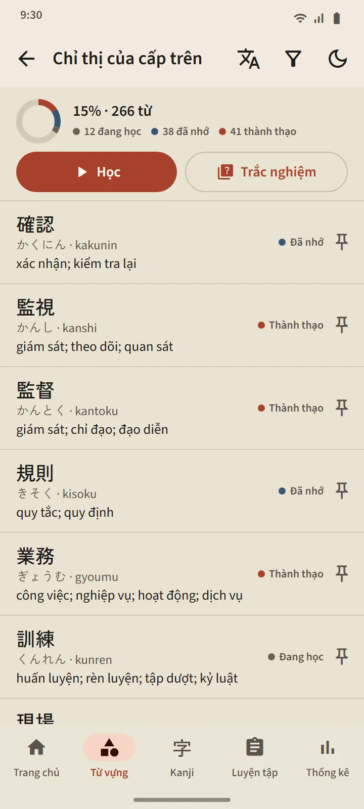

Từ vựng
Từ vựng nhớ thật lâu
Mỗi thẻ được lên lịch bằng FSRS, một thuật toán lặp lại ngắt quãng hiện đại. Bạn tự đánh giá, và ứng dụng tính xem khi nào từ đó quay lại: khoảng cách tiếp theo được ghi ngay trên từng nút. Từ vựng đi từ Mới, qua Đang học và Đã nhớ, đến Thành thạo, và giai đoạn cuối này chỉ đạt được thông qua trắc nghiệm.
- 95 chủ đề trong 11 nhóm. Nhóm Nơi làm việc có 21 chủ đề: chăm sóc người cao tuổi, xây dựng, nông nghiệp, ngư nghiệp, nhà máy, khách sạn, nhà hàng, an toàn lao động, chỉ thị của cấp trên, hợp đồng và tiền lương.
- Mỗi bộ thẻ một màn hình. Phần trăm hoàn thành, trạng thái của từng từ, các nút Học và Trắc nghiệm.
- Từ điển bỏ túi 38.085 từ. Tra bằng kanji, kana, romaji hoặc nghĩa.
